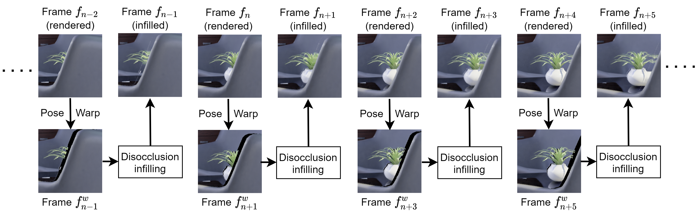
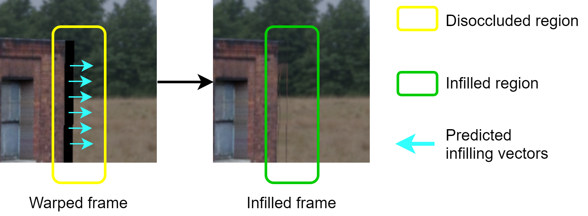

Revealing Disocclusions in Temporal View Synthesis through Infilling Vector Prediction
Vijayalakshmi Kanchana, Nagabhushan Somraj, Suraj Yadwad and Rajiv Soundararajan
Indian Institute of Science
Temporal view synthesis for frame rate upsampling
Alternate frames are graphically rendered and the intermediate frames are predicted using temporal view synthesis. Sample comparison videos with other competing methods
Abstract
We consider the problem of temporal view synthesis, where the goal is to predict a future video frame from the past frames using knowledge of the depth and relative camera motion. In contrast to revealing the disoccluded regions through intensity based infilling, we study the idea of an infilling vector to infill by pointing to a non-disoccluded region in the synthesized view. To exploit the structure of disocclusions created by camera motion during their infilling, we rely on two important cues, temporal correlation of infilling directions and depth. We design a learning framework to predict the infilling vector by computing a temporal prior that reflects past infilling directions and a normalized depth map as input to the network. We conduct extensive experiments on a large scale dataset we build for evaluating temporal view synthesis in addition to the SceneNet RGB-D dataset. Our experiments demonstrate that our infilling vector prediction approach achieves superior quantitative and qualitative infilling performance compared to other approaches in literature.Infilling Vectors - Idea
Disocclusions can be infilled by copying intensities from the neighborhood background regions, pointed by the predicted infilling vectors. 
Citation
If you use our work, please cite our paper:
Vijayalakshmi Kanchana, Nagabhushan Somraj, Suraj Yadwad, Rajiv Soundararajan, "Revealing Disocclusions in Temporal View Synthesis through Infilling Vector Prediction", IEEE Winter Conference on Applications of Computer Vision (WACV) 2022.
Bibtex:
@article{kanchana2022ivp,
title = {Revealing Disocclusions in Temporal View Synthesis through Infilling Vector Prediction},
author = {Kanchana, Vijayalakshmi and Somraj, Nagabhushan and Yadwad, Suraj and Soundararajan, Rajiv},
journal = {IEEE Winter Conference on Applications of Computer Vision (WACV)},
year = {2022}
}
title = {Revealing Disocclusions in Temporal View Synthesis through Infilling Vector Prediction},
author = {Kanchana, Vijayalakshmi and Somraj, Nagabhushan and Yadwad, Suraj and Soundararajan, Rajiv},
journal = {IEEE Winter Conference on Applications of Computer Vision (WACV)},
year = {2022}
}